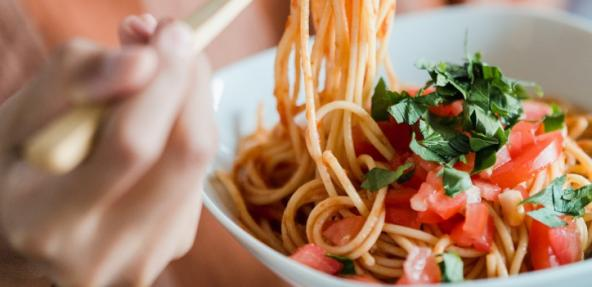

Lentil Bolognese

Classic lentil bolognese
Serve up this classic by replacing £4.50 worth of 500g minced beef with the exact same amount of lentils for just £1.35.
For extra nutrition, you could also choose to add a handful of frozen vegetables
to your vegan spag bol - which you can find for as little as £1 or less per bag.
Ingredients
- 1 large mug green lentils
- 1 can chopped tomatoes
- 2 chopped garlic cloves
- 1 chopped onion
- 1 chopped carrot
- 1 large stick of celery
- 2 handfuls of chopped mushrooms (optional)
- 2 tbsp oil
- 1 tsp mixed Italian herbs
- Salt and pepper
- 1 pint stock
- 1 pack spaghetti